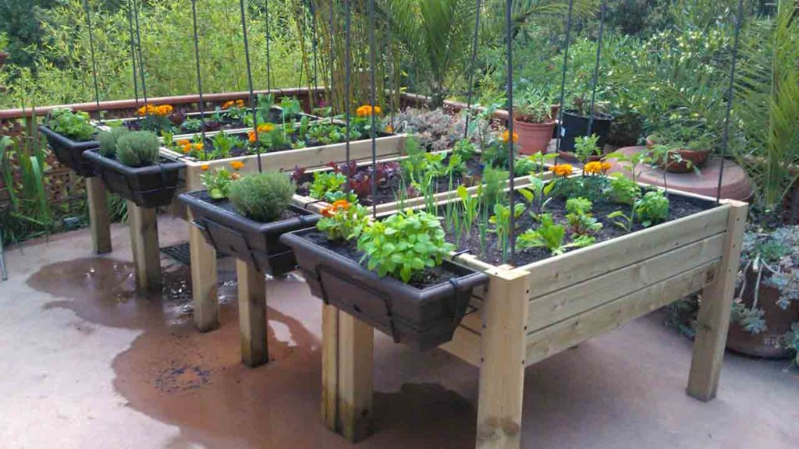

Somos un grupo de emprendedores, que buscamos la sustentabilidad en nuestros productos, cuidando la calidad en cada uno de ellos, enseñamos a que produzcas tus propios alimentos
En la mitología griega, Deméter es la diosa de la agricultura, las cosechas, la fertilidad y la naturaleza.Deméter es venerada como la protectora de la agricultura y se le rendían cultos y festivales en la antigua Grecia para asegurar buenas cosechas y la fertilidad de la tierra. Su culto estaba especialmente arraigado en regiones agrícolas como Eleusis, donde se celebraban los Misterios de Eleusis, rituales secretos dedicados a Deméter y Perséfone que prometían iniciación en los misterios de la vida, la muerte y el renacimiento.